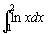

高斯-勒讓德十四點定積分
程式編寫日期: 2008年3月24日
以下程式使用了高斯-勒讓德法十四點方法(Gauss-Legendre Quadrature)計算一個定積分的近似值，現時不少圖像計算機亦是使用相似的方法計算定積分的近似值。
程式 (322 bytes，不包括綠色的函數方程)
Mem clear: ?→A: ?→B: 2-1(B - A→B: . 1080549487→X:
Lbl 0: A + B + BX: ln Ans: Ans ( . 2152638535(2>Y)
+ . 2051984637(Y2+6=5Y) + . 1855383975(Y>3)(6>Y)
+ . 1572031672(Y>5)(8>Y) + . 1215185707(Y>7)(9≧Y)
+ . 0801580872(Y>9)(12>Y) + . 0351194603(Y>11M+:
1+Y→Y: -X→X: Y=2 => . 3191123689→X:
Y=4 => . 5152486364→X: Y=6 => . 6872929048→X:
Y=8 => . 8272013151→X: Y=10 => . 9284348837→X:
Y=12 => . 9862838087→X: Y-14 => Goto 0: MB
註: 綠色的 ln Ans是函數方程(變數是Ans)，若果想計算其它函數的積分，只要修改綠色的部份。
例題: 利用高斯-勒讓德十四點方法(Gauss-Legendre Quadrature)，計算 
按 Prog 1 再按 1 EXE 2 EXE (顯示答案為0.386294361)
參考資料:
http://mathworld.wolfram.com/Legendre-GaussQuadrature.html
http://en.wikipedia.org/wiki/Gaussian_quadrature